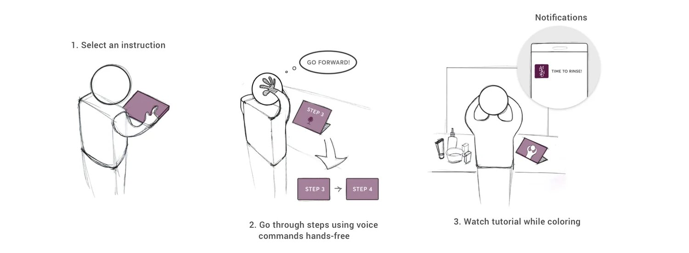
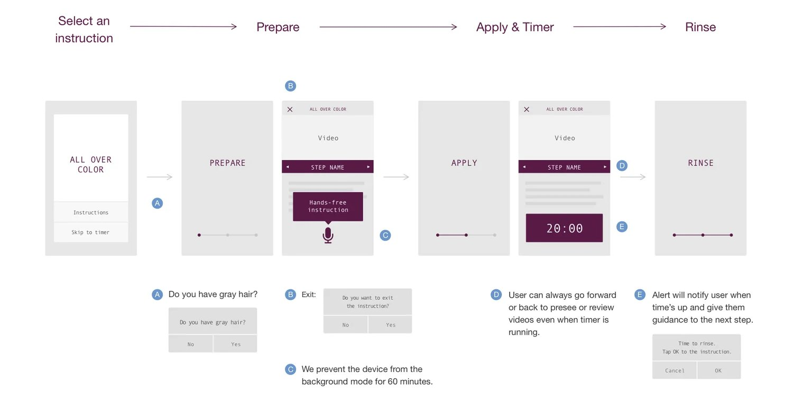
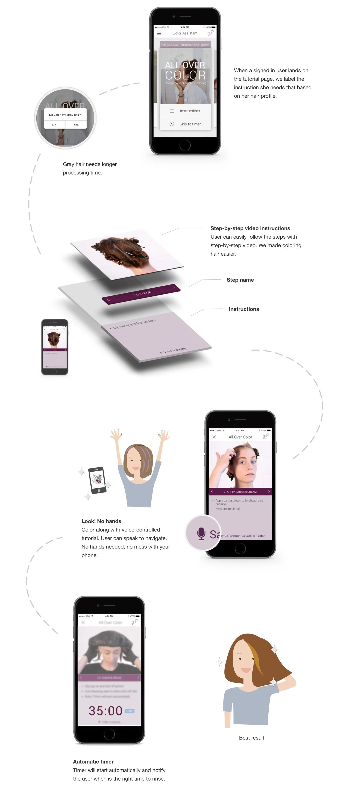

Earlier work · Mobile · 2016
Hands-Free Tutorial
An iOS app for Madison Reed, the at-home hair color brand.
Most women watch a coloring tutorial several times to memorize the steps. Halfway through, she still has to take off her gloves, open YouTube and find her place in the video again. Our goal was to make applying color easy and clear, and to get her the best result. From our observations and user interviews, we designed an app she can bring into the bathroom and follow without touching it.
Deliverables: flow diagrams, wireframes, high-fidelity mockups and specs.



How it landed
- Best Application, 2015 Tech and Innovation Awards, San Francisco Business Times
- Five-star rating on the App Store
- Featured in Vogue, WWD, Harper's Bazaar, Refinery29, AOL, 7x7 and Yahoo Beauty
“The timer with music is super smart. And the app being hands-free is brilliant. I'd hate to get color on my phone.”
App Store review
“It has step by step videos and a timer! It's brilliant!”
App Store review